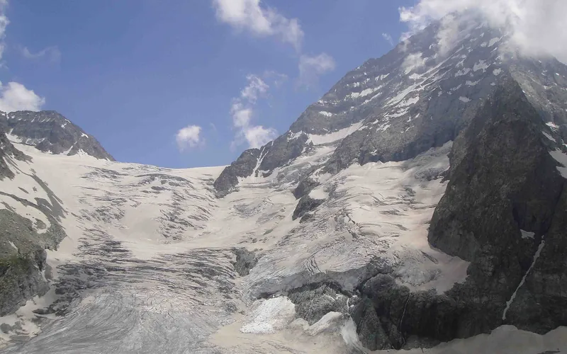
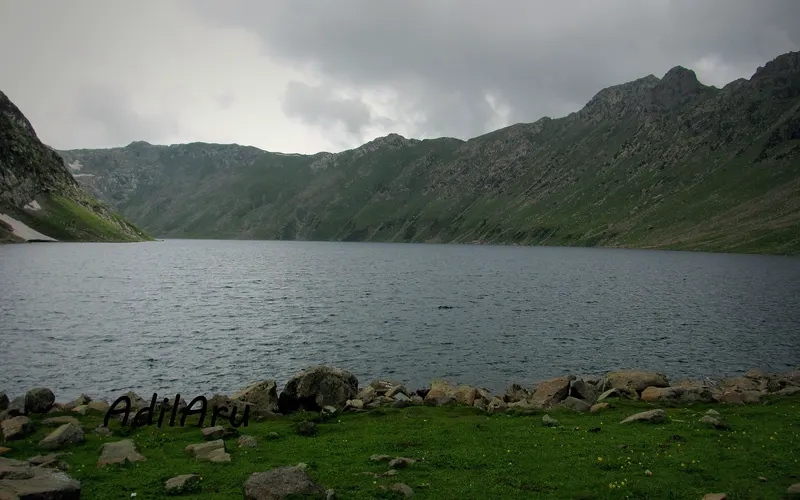
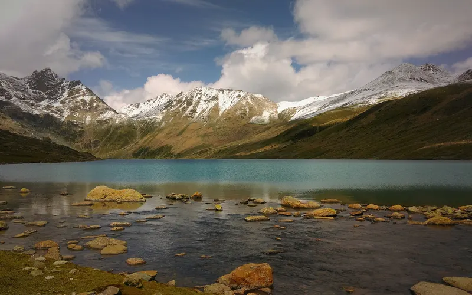

At their best in August
The months each trek's sources call the best.
| Trek | Highest point | Days on trail | Difficulty | Best months |
|---|---|---|---|---|
| Harishchandragad | 1,422 m | 2 | Easy | Jul–Sep |
| Rajmachi | 826 m | 2 | Easy | Jun–Sep, Nov–Mar |
| Kolahoi Glacier | 3,850 m | 5 | Easy–moderate | Jul–Sep |
| Kudremukh | 1,892 m | 3 | Moderate | Jun–Aug, Nov–Feb |
| Hampta Pass | 4,200 m | 5 | Moderate | Jun–Oct |
| Tarsar Marsar | 4,024 m | 7 | Moderate | Jul–Aug |
| Markha Valley | 5,260 m | 5 | Moderate–hard | Jul–Aug |
| Rumtse to Tso Moriri | 5,435 m | 7 | Hard | Jul–Aug |
| Kashmir Great Lakes | 4,206 m | 8 | Hard | Jul–Sep |
| Pin Parvati Pass | 5,319 m | 12 | Hard | Jun–Sep |
| Valley of Flowers | 4,329 m | 4 | Not graded | Jul–Aug |

Easy · 2 daysPhoto: Tokendra, CC BY-SA 4.0
Harishchandragad
▲ 1,422 m · Best Jul–Sep
Easy · 2 daysPhoto: Mukundvg1942, CC BY-SA 4.0
Rajmachi
▲ 826 m · Best Jun–Sep, Nov–Mar
Easy–moderate · 5 daysPhoto: Irfanaru, CC BY-SA 3.0
Kolahoi Glacier
▲ 3,850 m · Best Jul–Sep
Moderate · 3 daysPhoto: Dhruvaraj S from India, CC BY 2.0
Kudremukh
▲ 1,892 m · Best Jun–Aug, Nov–Feb
Moderate · 5 daysPhoto: Adarsh Patel, CC BY-SA 4.0
Hampta Pass
▲ 4,200 m · Best Jun–Oct
Moderate · 7 daysPhoto: AdilAru, CC BY-SA 3.0
Tarsar Marsar
▲ 4,024 m · Best Jul–Aug
Moderate–hard · 5 daysPhoto: SlartibErtfass der bertige, CC BY-SA 3.0
Markha Valley
▲ 5,260 m · Best Jul–Aug
Hard · 7 daysPhoto: Ingo Mehling, CC BY-SA 3.0
Rumtse to Tso Moriri
▲ 5,435 m · Best Jul–Aug
Hard · 8 daysPhoto: Owais Mushtaq Zargar, CC BY-SA 4.0
Kashmir Great Lakes
▲ 4,206 m · Best Jul–Sep
Hard · 12 daysPhoto: Bharatkaistha, CC BY-SA 4.0
Pin Parvati Pass
▲ 5,319 m · Best Jun–Sep
Not graded · 4 daysPhoto: Rohit Sharma, CC BY-SA 4.0
Valley of Flowers
▲ 4,329 m · Best Jul–AugAlso possible in August
Doable, but not the peak season: expect snow, rain or heat, as each trek page explains.

Easy · 2 daysPhoto: Casonideepika, CC BY-SA 4.0
Prashar Lake
▲ 2,730 m · Best Apr–Jun, Sep–Nov
Easy · 2 daysPhoto: Mvkulkarni23, CC BY-SA 3.0
Kalsubai
▲ 1,646 m · Best Oct–Mar
Easy · 2 daysPhoto: Arshiya Urveeja Bose, CC BY 2.0
David Scott Trail
▲ 1,829 m · Best Oct–Apr
Easy · 3 daysPhoto: Gaurav Dhingra, CC BY-SA 4.0
Beas Kund
▲ 3,700 m · Best Jun, Sep–Oct
Easy · 4 daysPhoto: Vishalwiki2606, CC BY-SA 4.0
Bhrigu Lake
▲ 4,300 m · Best May–Jun, Sep–Oct
Easy · 5 daysPhoto: Mike Prince from Bangalore, India, CC BY 2.0
Dayara Bugyal
▲ 3,750 m · Best Dec–Mar
Easy · 6 daysPhoto: Shaswat Nimesh, CC BY-SA 4.0
Ali–Bedni Bugyal
▲ 3,803 m · Best May–Jun, Sep–Nov
Easy · 7 daysPhoto: Metanish, CC BY-SA 4.0
Har Ki Dun
▲ 3,566 m · Best Sep–Dec
Easy–moderate · 1 dayPhoto: Photos Worldwide, CC0
Kheerganga
▲ 2,960 m · Best Apr–Jun, Sep–Oct
Easy–moderate · 2 daysPhoto: Tokendra, CC BY-SA 4.0
Rajgad to Torna
▲ 1,403 m · Best Sep–Feb
Moderate–hard · 8 daysPhoto: Photos Worldwide, CC0
Satopanth Tal
▲ 4,346 m · Best May–Jun, Sep–Oct
Not graded · 5 daysPhoto: Rahul upreti, CC BY-SA 4.0
Chopta Chandrashila
▲ 3,700 m · Best Mar–AprQuestions
Which are the best treks in August?
The Treqz atlas lists Harishchandragad, Rajmachi, Kolahoi Glacier, Kudremukh, Hampta Pass, Tarsar Marsar and 5 more.
Which is the easiest of the best treks in August?
Harishchandragad: graded Easy, 2 days on the trail.
Which is the highest of the best treks in August?
Rumtse to Tso Moriri, with a highest point of 5,435 m.
Which is the shortest of the best treks in August?
Harishchandragad: 2 days on the trail.
Best monthsAlso possibleSeasons come from each trek's cited sources.
See all 59 treks →